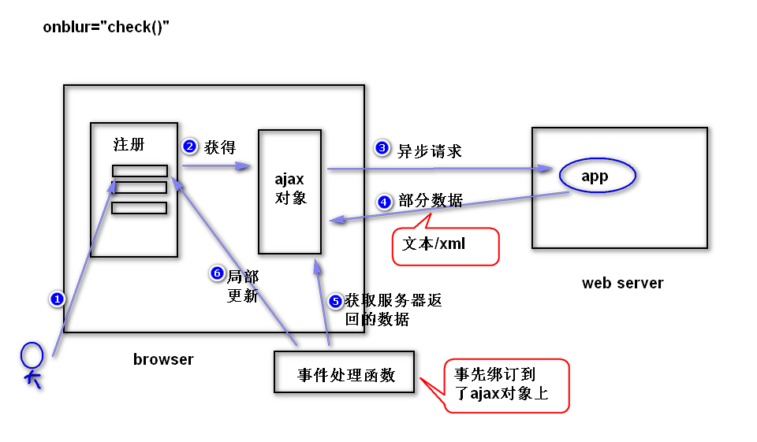

是一种用来改善用户体验的技术，本质是利用浏览器提供的一个
特殊对象（ajax对象，即XMLHttpRequest对象）向服务器发送
异步请求；服务器返回部分数据，浏览器利用这些数据对当前页
面做局部更新；整个过程，页面无刷新，不打断用户的操作。
注：
异步请求，指的是，当ajax对象在向服务器发送请求时，浏览器
并不会销毁当前页面，用户仍然可以对当前页面做其它操作。

function getAjax(){
var xhr = null;
if(window.XMLHttpRequest){
//非ie浏览器
xhr = new XMLHttpRequest();
}else{
xhr = new ActiveXObject('MicroSoft.XMLHttp');
}
return xhr;
}
1)onreadystatechange:绑订事件处理函数（用来处理readystatechange事件）
注：当readyState属性值发生了任何改变（比如从０变成了１）,就会产生readystatechange事件。
2)readyState:有５个值(0,1,2,3,4)，用来获得ajax对象与服务器通信
的进展。（当值是4的时候，表示ajax对象已经获得了服务器返回的
所有的数据）。
3)responseText:获得服务器返回的文本数据。
4)responseXML:获得服务器返回的xml数据。
5)status:获得状态码。
var xhr = getAjax();
方式一 发送get请求
xhr.open(请求类型,请求地址,同步/异步);
xhr.onreadystatechange = 事件处理函数。
xhr.send(null);
注：
同步：当ajax对象发送请求时，浏览器会锁定当前
页面（用户对当前页面不能够做任何操作）。
建议少用。
比如：
xhr.open('get','check.do?uname=Sally',true);
xhr.onreadystatechange = f1;
xhr.send(null);
方式二 发送post请求
xhr.open('post','check.do',true);
xhr.setRequestHeader('content-type',
'application/x-www-form-urlencoded');
xhr.onreadystatechange = f1;
xhr.send('uname=Sally');
注：（了解）
按照http协议要求，如果发送的是post请求，请求数据包
应该包含一个消息头('content-type')。但是，ajax对象
默认发送的数据包是不带这个消息头的，所以，需要调用
setRequestHeader方法。
注：只需要返回部分数据。
if(xhr.readyState == 4 &&
xhr.status == 200){
//获得服务器返回的数据
var txt = xhr.responseText;
//更新页面
...
}
1)什么是缓存问题?
ie浏览器提供的ajax对象在发送get请求时，会比较请求地址是否
访问过，如果该地址之前访问过，则不再发送新的请求，而是显示
第一次访问的结果。
2)如何解决?
在请求地址后面，添加一个随机数。
比如 getNumber.do?